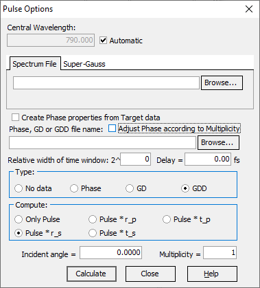
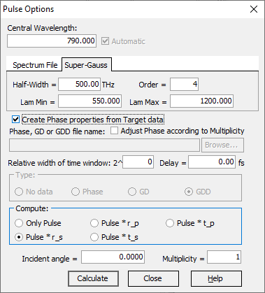

Pulse Options
Pulse Options
Navigation: OptiLayer Menu Commands > Analysis Menu > Pulse Analysis >
Pulse Options
` <pulse_analysis.html>`__ ` <pulse_analysis.html>`__ ` <material_dispersion_evaluation.html>`__

Pulse properties can be described with two files: one with Spectrum data and another with Phase information (it could be phase, GD, or GDD). In this case, the full path should be entered into the corresponding entry fields either directly or using Browse… buttons. Pulse information should be represented as a two-column text file, where the first column should be wavelength in nm and the second should be the related characteristic. In the case of file representation, the Central Wavelength of the pulse can be computed automatically based on imported data, or it could be specified directly. Another way is based on the Super-Gauss intensity shape and phase information retrieved from the currently loaded Target file. For this case, you need to activate the second Super-Gauss tab and select the Create Phase properties from Target data checkbox. Selection of this phase setting means that we assume the pulse to be exactly opposite to the target phase, as it is logical to assume that one tries to obtain full compensation of the phase modulation.

Half-Width and Order entry fields describe the shape of the Super-Gauss pulse, while Lam Min and Lam Max are responsible for the spectral range.
The relative width of the time window is responsible for the fast Fourier transform settings used to compute the time-domain pulse representation. It is controlled as a power of 2, and the default recommended value is 0 (auto-computed value is used without further modification). If you increase this value, the size of the window increases, minimizing numerical artifacts, but computational time also increases quickly. Be careful when increasing this value, as it is easy to encounter long computation times and problems with memory size in the 32-bit version.
Delay allows for additional shifting of the output pulse on the time axis. In some cases, it is convenient, especially if the obtained delay is rather significant, and it is necessary to compare the shapes of the pulse with the Fourier-limited version.
Type selection should be configured in accordance with the data provided as a source of phase information.
Compute describes what pulse you will see on the output. It could be just the input pulse with the applied phase modulation; in this case, you can compare it with the Fourier-limited version and estimate the required level of compression. Alternatively, you can select reflected or transmitted versions for any polarization of light.
The incident angle is used during the computation of the output pulse.

If Override Angle options are used in Multi-Coating Manager, this value is ignored, and the values configured in the Multi-Coating Manager are used instead.
Multiplicity increases the number of reflections; it is useful for estimating the overall performance of dispersive mirror compressors.
Adjusting the Phase according to Multiplicity should usually be activated if a Multiplicity higher than 1 is used, especially if pulse phase information was generated from the target data. The reason for this adjustment is that in most cases target requirements are formulated for one reflection (or for one effective reflection in double-angle and complementary mirror approaches). During this adjustment, the phase is simply multiplied by the Multiplicity value.